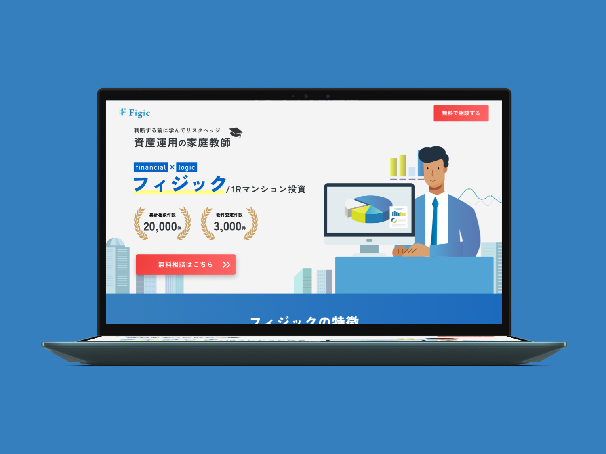
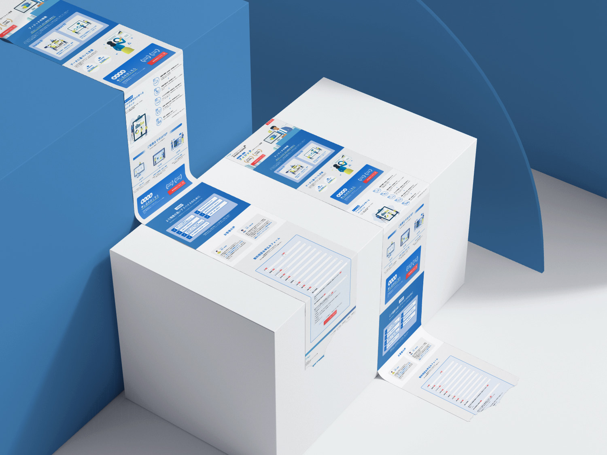
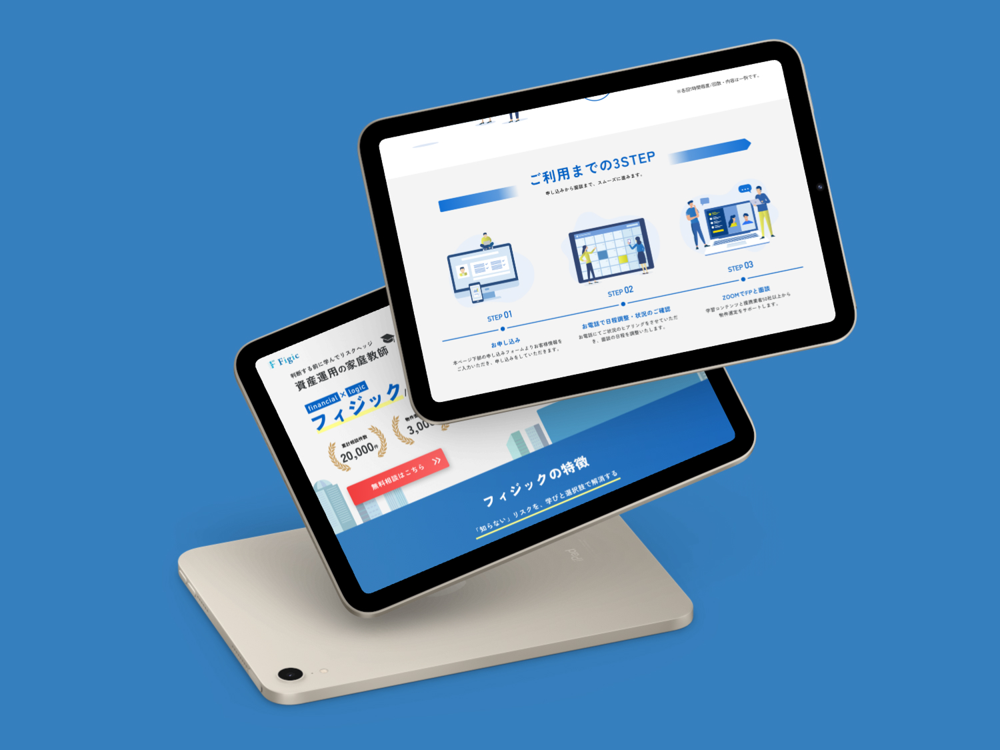
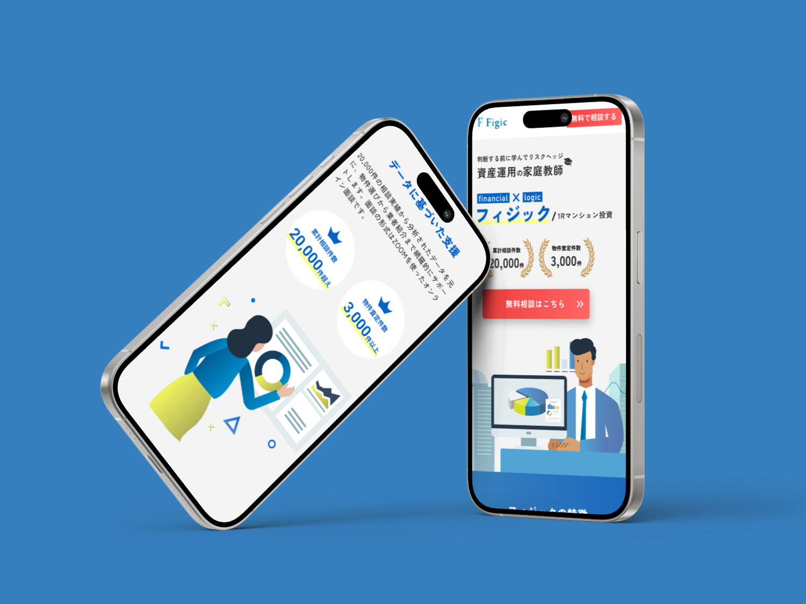
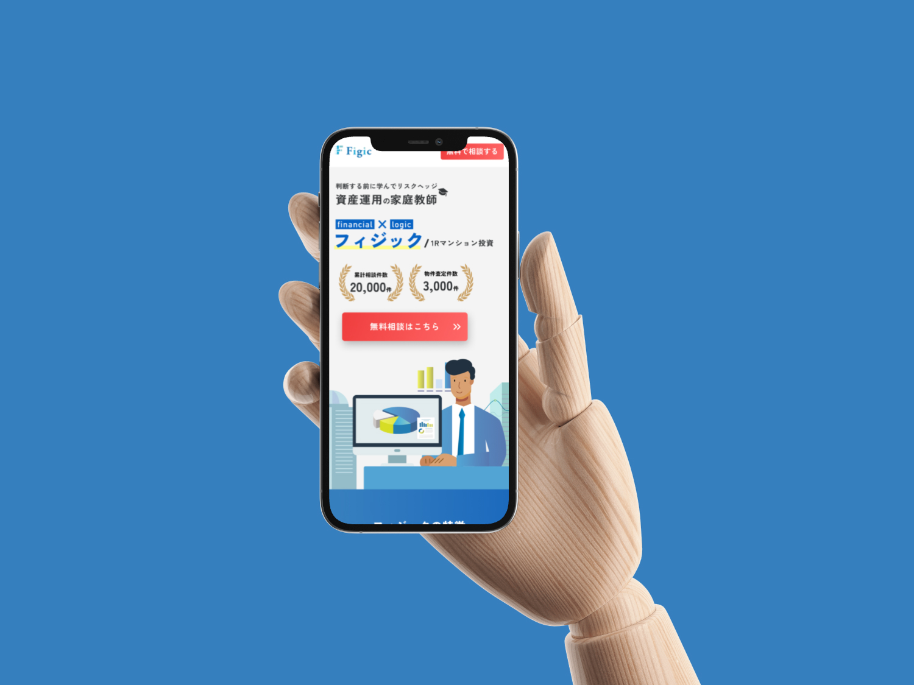

株式会社クリアス
Figic LP制作
URL
非公開
制作概要
株式会社クリアス様のサービス「Figic」のランディングページデザイン制作。
商品やサービスの魅力を端的に伝え、ユーザーのアクション（問い合わせ・申し込み）につなげることを目的としたLP設計を行いました。

- 課題
-
- ・サービスの強みや差別化ポイントが明確に伝わるビジュアルが必要だった
- ・ファーストビューでの離脱を防ぎ、スクロールを促す構成が求められた
- ・コンバージョン率を意識した導線設計が必要だった
- ターゲット
-
- ・サービスに関心を持つ潜在顧客
- ・広告経由で流入する新規ユーザー
- ・問い合わせ・申し込みを検討している見込み客
- 目的
-
- ・ファーストビューで興味を引き、最後まで読ませるLP構成を実現する
- ・サービスの価値を端的に伝え、コンバージョンにつなげる
- ・スマートフォンでの閲覧を重視したモバイルファーストなデザインを設計する
- デザイン
-
- ビジュアルコンセプト：サービスの世界観に合わせたビジュアル設計で、信頼感と行動喚起を両立。ファーストビューにインパクトのあるキャッチコピーとビジュアルを配置。
- カラー：ブランドカラーを基調に、CTAボタンにはアクセントカラーを使用し、視認性と行動喚起を強化。
- レイアウト：1カラムの縦長構成で、情報を段階的に提示。セクションごとにメリハリをつけ、ユーザーの読み進める意欲を維持。
- 情報設計
-
ファーストビューでサービスの強みを端的に訴求し、根拠となる実績・特徴→ユーザーの声→料金/プラン→CTAと、説得力のある順序で情報を展開。
各セクションの合間にCTAボタンを適宜配置し、ユーザーがどの段階でも行動に移れる設計を意識しました。 - 担当範囲・ツール
-
- 担当：デザインのみ
- 使用ツール：Figma / Illustrator


学び
LP制作を通じて、「伝える順番」と「行動を促すデザイン」の重要性を実感した。 コーポレートサイトとは異なり、1ページ内で完結する構成の中でいかにユーザーの興味を持続させ、コンバージョンにつなげるかという視点が求められた。 CTAボタンの配置・色・文言ひとつで成果が変わるという実務的な学びが得られ、マーケティング視点でのデザイン力が向上した。
